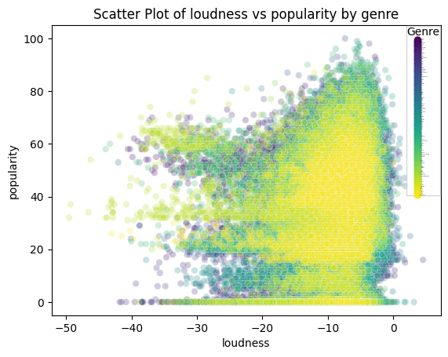
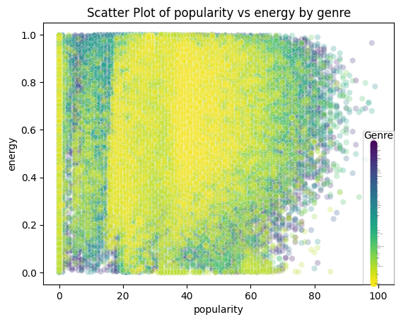
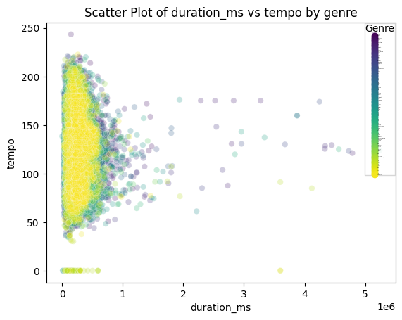
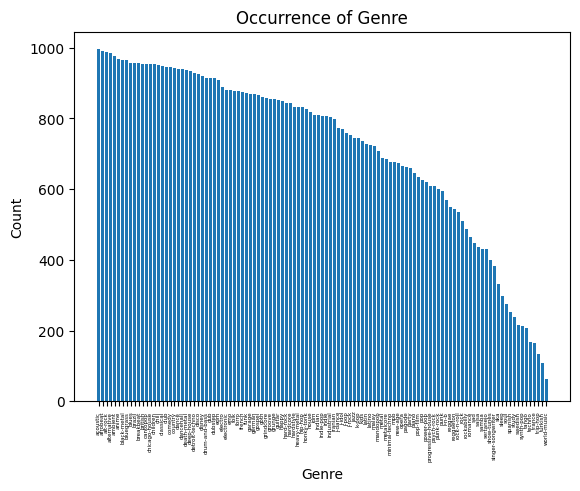
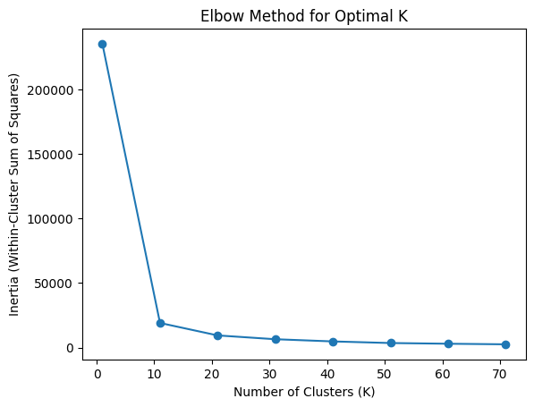
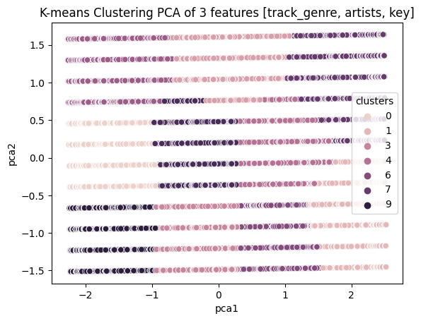
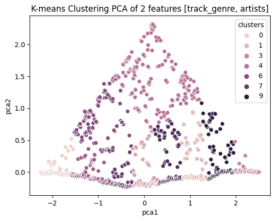

import pandas as pd
import numpy as np
import seaborn as sns
import matplotlib.pyplot as plt
from sklearn.cluster import KMeans, DBSCAN
from sklearn.model_selection import train_test_split, ParameterGrid
from sklearn.decomposition import PCA
from sklearn.preprocessing import StandardScaler
from sklearn.metrics import silhouette_scoreAuthor: Daniel Hassler
Data Analysis
Look at -> * https://github.com/ageron/handson-ml/blob/master/08_dimensionality_reduction.ipynb * https://www.kaggle.com/datasets/maharshipandya/-spotify-tracks-dataset/code
original_df = pd.read_csv("./dataset-dedup.csv")
print(original_df.columns)
# original_df = original_df.drop_duplicates(subset=["artists", "track_name"], keep="first").reset_index()
print(original_df.shape)
# original_df.to_csv("./dataset-dedup.csv")
features_x = ["loudness", "popularity", "duration_ms"]
features_y = ["popularity", "energy", "tempo"]
for i, (x,y) in enumerate(zip(features_x, features_y)):
scatter = sns.scatterplot(x=x, y=y, hue='track_genre', data=original_df, palette="viridis", alpha=0.25)
legend_labels = original_df['track_genre'].unique()# [:3] # Show only the first 3 genres
scatter.legend(title='Genre', labels=legend_labels, prop={'size': 1})
plt.title(f"Scatter Plot of {x} vs {y} by genre")
plt.show()
plt.show()Index(['Unnamed: 0.1', 'index', 'Unnamed: 0', 'track_id', 'artists',
'album_name', 'track_name', 'popularity', 'duration_ms', 'explicit',
'danceability', 'energy', 'key', 'loudness', 'mode', 'speechiness',
'acousticness', 'instrumentalness', 'liveness', 'valence', 'tempo',
'time_signature', 'track_genre'],
dtype='object')
(81344, 23)


unique_vals = original_df['track_genre'].unique()
plt.bar(unique_vals, original_df['track_genre'].value_counts())
plt.title("Occurrence of Genre")
plt.ylabel("Count")
plt.xlabel("Genre")
_ = plt.xticks(rotation="vertical", fontsize=4)
K-Means Clustering
Hyperparameter Tuning for K-Means
inertia = []
# train_df is the numeric representation of original_df
train_df = original_df.drop(columns=['Unnamed: 0.1', 'index', 'Unnamed: 0', 'track_id',
'album_name', 'track_name', 'popularity', 'duration_ms', 'explicit',
'danceability', 'energy', 'loudness', 'mode', 'speechiness',
'acousticness', 'instrumentalness', 'liveness', 'valence', 'tempo',
'time_signature'])
for col in train_df.columns:
if not pd.api.types.is_numeric_dtype(train_df[col]):
train_df[col] = pd.factorize(original_df[col])[0]
scaler = StandardScaler()
# df_scaled is the scaled version of train_df
df_scaled = scaler.fit_transform(train_df)
pca_num_components = 2
# df_pca to reduce dimensionality
pca = PCA(n_components=pca_num_components).fit_transform(df_scaled)
df_pca = pd.DataFrame(pca,columns=['pca1','pca2'])
for k in range(1, 80, 10):
kmeans = KMeans(n_clusters=k, random_state=42)
kmeans.fit_predict(df_pca)
inertia.append(kmeans.inertia_)d:\Users\dwh71\AppData\Local\Programs\Python\Python310\lib\site-packages\sklearn\cluster\_kmeans.py:1416: FutureWarning: The default value of `n_init` will change from 10 to 'auto' in 1.4. Set the value of `n_init` explicitly to suppress the warning
super()._check_params_vs_input(X, default_n_init=10)
d:\Users\dwh71\AppData\Local\Programs\Python\Python310\lib\site-packages\sklearn\cluster\_kmeans.py:1416: FutureWarning: The default value of `n_init` will change from 10 to 'auto' in 1.4. Set the value of `n_init` explicitly to suppress the warning
super()._check_params_vs_input(X, default_n_init=10)
d:\Users\dwh71\AppData\Local\Programs\Python\Python310\lib\site-packages\sklearn\cluster\_kmeans.py:1416: FutureWarning: The default value of `n_init` will change from 10 to 'auto' in 1.4. Set the value of `n_init` explicitly to suppress the warning
super()._check_params_vs_input(X, default_n_init=10)
d:\Users\dwh71\AppData\Local\Programs\Python\Python310\lib\site-packages\sklearn\cluster\_kmeans.py:1416: FutureWarning: The default value of `n_init` will change from 10 to 'auto' in 1.4. Set the value of `n_init` explicitly to suppress the warning
super()._check_params_vs_input(X, default_n_init=10)
d:\Users\dwh71\AppData\Local\Programs\Python\Python310\lib\site-packages\sklearn\cluster\_kmeans.py:1416: FutureWarning: The default value of `n_init` will change from 10 to 'auto' in 1.4. Set the value of `n_init` explicitly to suppress the warning
super()._check_params_vs_input(X, default_n_init=10)
d:\Users\dwh71\AppData\Local\Programs\Python\Python310\lib\site-packages\sklearn\cluster\_kmeans.py:1416: FutureWarning: The default value of `n_init` will change from 10 to 'auto' in 1.4. Set the value of `n_init` explicitly to suppress the warning
super()._check_params_vs_input(X, default_n_init=10)
d:\Users\dwh71\AppData\Local\Programs\Python\Python310\lib\site-packages\sklearn\cluster\_kmeans.py:1416: FutureWarning: The default value of `n_init` will change from 10 to 'auto' in 1.4. Set the value of `n_init` explicitly to suppress the warning
super()._check_params_vs_input(X, default_n_init=10)
d:\Users\dwh71\AppData\Local\Programs\Python\Python310\lib\site-packages\sklearn\cluster\_kmeans.py:1416: FutureWarning: The default value of `n_init` will change from 10 to 'auto' in 1.4. Set the value of `n_init` explicitly to suppress the warning
super()._check_params_vs_input(X, default_n_init=10)Plotting the Elbow Chart
# Plot the elbow curve
plt.plot(range(1, 80, 10), inertia, marker='o')
plt.title('Elbow Method for Optimal K')
plt.xlabel('Number of Clusters (K)')
plt.ylabel('Inertia (Within-Cluster Sum of Squares)')
plt.show()
Choosing K-Means with “Elbow” Point
kmeans = KMeans(n_clusters=10, random_state=42)
original_df['clusters'] = kmeans.fit_predict(df_pca)d:\Users\dwh71\AppData\Local\Programs\Python\Python310\lib\site-packages\sklearn\cluster\_kmeans.py:1416: FutureWarning: The default value of `n_init` will change from 10 to 'auto' in 1.4. Set the value of `n_init` explicitly to suppress the warning
super()._check_params_vs_input(X, default_n_init=10)sns.scatterplot(x="pca1", y="pca2", hue=original_df['clusters'], data=df_pca)
plt.title('K-means Clustering PCA of 3 features [track_genre, artists, key]')
plt.show()
Evaluation
original_df['Distance_to_Centroid'] = kmeans.transform(df_pca).min(axis=1)def get_nearest_entry(idx, k=5):
# print(original_df.iloc[idx])
# print(train_df.iloc[idx])
cluster = kmeans.predict(df_pca.iloc[idx].to_frame().T)[0]
cluster_data = original_df[original_df["clusters"] == cluster]
cluster_data["closest_entries_to_idx"] = (cluster_data["Distance_to_Centroid"] - cluster_data.loc[idx]["Distance_to_Centroid"]).abs()
cluster_data = cluster_data.sort_values(by="closest_entries_to_idx")
# print(cluster_data[["artists", "album_name", "track_name", "track_genre"]])
cluster_data.drop(columns=["closest_entries_to_idx"])
print(f"Top {k} Closest Examples to {cluster_data.loc[idx]['artists']}'s \"{cluster_data.loc[idx]['track_name']}\"")
print(cluster_data[:k][["artists", "track_name", "track_genre"]])
print("\n\n")
get_nearest_entry(35640) # rock song
get_nearest_entry(16587) # country song
get_nearest_entry(41220) # rap songTop 5 Closest Examples to Daughtry's "September"
artists track_name track_genre
35640 Daughtry September grunge
35381 Daughtry It's Not Over grunge
35839 Stone Sour Hesitate grunge
55666 Mark Broom Five/Four minimal-techno
40063 TNT;POPR3B3L I'm Raving - Radio Edit hardstyle
Top 5 Closest Examples to Florida Georgia Line's "Stay"
artists \
16587 Florida Georgia Line
8395 Datsik;Virtual Riot
8582 The Prodigy
8819 The Prodigy
8529 The Prodigy
track_name track_genre
16587 Stay country
8395 Nasty breakbeat
8582 Girls breakbeat
8819 We Are The Ruffest breakbeat
8529 Out of Space - Techno Underworld Remix Remastered breakbeat
Top 5 Closest Examples to Future;Lil Uzi Vert's "Tic Tac"
artists track_name \
41220 Future;Lil Uzi Vert Tic Tac
43994 Pritam;Arijit Singh;Shadab;Altamash Faridi Lambiyaan Si Judaiyaan
41226 Lil Baby All In
43981 Pritam;Sukhwinder Singh;Sunidhi Chauhan Marjaani
41207 Zack Knight;Jasmin Walia Bom Diggy Diggy
track_genre
41220 hip-hop
43994 indian
41226 hip-hop
43981 indian
41207 hip-hop
C:\Users\dwh71\AppData\Local\Temp\ipykernel_7112\101083667.py:6: SettingWithCopyWarning:
A value is trying to be set on a copy of a slice from a DataFrame.
Try using .loc[row_indexer,col_indexer] = value instead
See the caveats in the documentation: https://pandas.pydata.org/pandas-docs/stable/user_guide/indexing.html#returning-a-view-versus-a-copy
cluster_data["closest_entries_to_idx"] = (cluster_data["Distance_to_Centroid"] - cluster_data.loc[idx]["Distance_to_Centroid"]).abs()
C:\Users\dwh71\AppData\Local\Temp\ipykernel_7112\101083667.py:6: SettingWithCopyWarning:
A value is trying to be set on a copy of a slice from a DataFrame.
Try using .loc[row_indexer,col_indexer] = value instead
See the caveats in the documentation: https://pandas.pydata.org/pandas-docs/stable/user_guide/indexing.html#returning-a-view-versus-a-copy
cluster_data["closest_entries_to_idx"] = (cluster_data["Distance_to_Centroid"] - cluster_data.loc[idx]["Distance_to_Centroid"]).abs()
C:\Users\dwh71\AppData\Local\Temp\ipykernel_7112\101083667.py:6: SettingWithCopyWarning:
A value is trying to be set on a copy of a slice from a DataFrame.
Try using .loc[row_indexer,col_indexer] = value instead
See the caveats in the documentation: https://pandas.pydata.org/pandas-docs/stable/user_guide/indexing.html#returning-a-view-versus-a-copy
cluster_data["closest_entries_to_idx"] = (cluster_data["Distance_to_Centroid"] - cluster_data.loc[idx]["Distance_to_Centroid"]).abs()original_df = pd.read_csv("./dataset-dedup.csv")
# train_df is the numeric representation of original_df
train_df = original_df.drop(columns=['Unnamed: 0.1', 'index', 'Unnamed: 0', 'track_id',
'album_name', 'track_name', 'popularity', 'duration_ms', 'explicit',
'danceability', 'key', 'energy', 'loudness', 'mode', 'speechiness',
'acousticness', 'instrumentalness', 'liveness', 'valence', 'tempo',
'time_signature'])
for col in train_df.columns:
if not pd.api.types.is_numeric_dtype(train_df[col]):
train_df[col] = pd.factorize(original_df[col])[0]
scaler = StandardScaler()
# df_scaled is the scaled version of train_df
df_scaled = scaler.fit_transform(train_df)
pca_num_components = 2
# df_pca to reduce dimensionality
pca = PCA(n_components=pca_num_components).fit_transform(df_scaled)
df_pca = pd.DataFrame(pca,columns=['pca1','pca2'])
kmeans = KMeans(n_clusters=10, random_state=42)
original_df['clusters'] = kmeans.fit_predict(df_pca)
sns.scatterplot(x="pca1", y="pca2", hue=original_df['clusters'], data=df_pca)
plt.title('K-means Clustering PCA of 2 features [track_genre, artists]')
plt.show()
original_df['Distance_to_Centroid'] = kmeans.transform(df_pca).min(axis=1)
get_nearest_entry(35640) # rock song
get_nearest_entry(16587) # country song
get_nearest_entry(41220) # rap songd:\Users\dwh71\AppData\Local\Programs\Python\Python310\lib\site-packages\sklearn\cluster\_kmeans.py:1416: FutureWarning: The default value of `n_init` will change from 10 to 'auto' in 1.4. Set the value of `n_init` explicitly to suppress the warning
super()._check_params_vs_input(X, default_n_init=10)
C:\Users\dwh71\AppData\Local\Temp\ipykernel_7112\101083667.py:6: SettingWithCopyWarning:
A value is trying to be set on a copy of a slice from a DataFrame.
Try using .loc[row_indexer,col_indexer] = value instead
See the caveats in the documentation: https://pandas.pydata.org/pandas-docs/stable/user_guide/indexing.html#returning-a-view-versus-a-copy
cluster_data["closest_entries_to_idx"] = (cluster_data["Distance_to_Centroid"] - cluster_data.loc[idx]["Distance_to_Centroid"]).abs()
C:\Users\dwh71\AppData\Local\Temp\ipykernel_7112\101083667.py:6: SettingWithCopyWarning:
A value is trying to be set on a copy of a slice from a DataFrame.
Try using .loc[row_indexer,col_indexer] = value instead
See the caveats in the documentation: https://pandas.pydata.org/pandas-docs/stable/user_guide/indexing.html#returning-a-view-versus-a-copy
cluster_data["closest_entries_to_idx"] = (cluster_data["Distance_to_Centroid"] - cluster_data.loc[idx]["Distance_to_Centroid"]).abs()
C:\Users\dwh71\AppData\Local\Temp\ipykernel_7112\101083667.py:6: SettingWithCopyWarning:
A value is trying to be set on a copy of a slice from a DataFrame.
Try using .loc[row_indexer,col_indexer] = value instead
See the caveats in the documentation: https://pandas.pydata.org/pandas-docs/stable/user_guide/indexing.html#returning-a-view-versus-a-copy
cluster_data["closest_entries_to_idx"] = (cluster_data["Distance_to_Centroid"] - cluster_data.loc[idx]["Distance_to_Centroid"]).abs()
Top 5 Closest Examples to Daughtry's "September"
artists track_name track_genre
35439 Daughtry Waiting for Superman grunge
35678 Daughtry Gone Too Soon grunge
35802 Daughtry I'll Fight grunge
35640 Daughtry September grunge
35336 Daughtry Home grunge
Top 5 Closest Examples to Florida Georgia Line's "Stay"
artists track_name track_genre
16592 Florida Georgia Line I Love My Country country
16587 Florida Georgia Line Stay country
16938 Florida Georgia Line H.O.L.Y. country
16598 Florida Georgia Line Sun Daze country
16975 Florida Georgia Line Life country
Top 5 Closest Examples to Future;Lil Uzi Vert's "Tic Tac"
artists track_name track_genre
41220 Future;Lil Uzi Vert Tic Tac hip-hop
39123 Lionheart Cursed hardcore
39035 Lionheart LHHC '17 hardcore
39040 Bodyjar A Hazy Shade of Winter hardcore
39033 Naked Raygun Rat Patrol hardcore